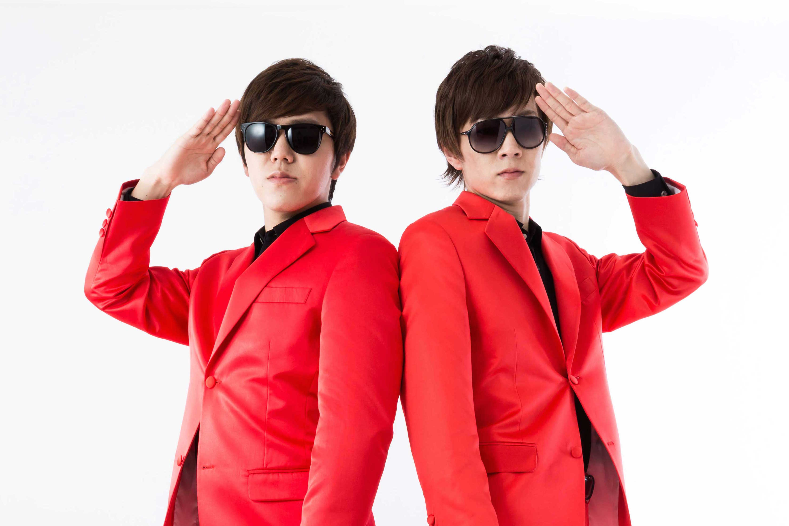
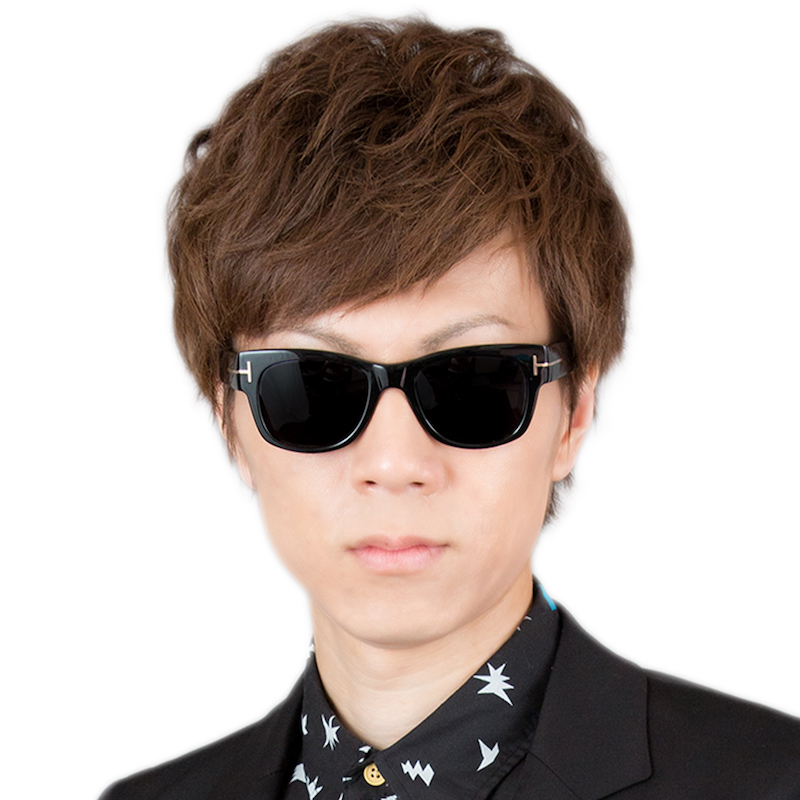

YouTuber兼音楽クリエイター・HIKAKIN&SEIKIN
合言葉は「ブンブンハローYouTube」「See You Next Time!」
日本を代表するトップユーチューバーの兄弟。
HIKAKINプロフィール
国内チャンネル総登録者数No.1、名実ともに日本トップのYouTuber。新潟県出身。
高校生の頃にYouTubeを始め、「HIKAKIN」チャンネルを開設。スーパーマリオのゲーム音楽をビートボックスで表現した「Super Mario Beatbox」の動画が世界中で話題となる。2013年にはエアロスミスのツアーに参加し、ビートボックスによる共演を果たした。
ビートボックス以外にも、日常の面白いものを独自の視点で紹介する「HikakinTV」や、ゲーム実況の「Hikakin Games」などがある。
UUUM所属のYouTuberである「マスオ」は、小学校からの幼馴染。小中高と同じ学校に通っていた。
SEIKINプロフィール

SeikinTV、SeikinGamesを運営するYouTuber。新潟県出身。
自身のスキルを生かした「歌ってみた」、面白商品の紹介やゲーム実況など、ジャンルにとらわれない幅広い内容の動画で、様々な世代から人気を集めている。
また、自身が作詞作曲を手がけ、HIKAKINのチャンネルで公開した「YouTubeテーマソング」は総再生回数3千6百万回を超える大ヒットになった。
2016年8月にリリースしたセカンドシングル「Keep Your Head Up」は、iTunesMusic Storeエレクトロニックシングル・アルバムチャート共に1位、総合アルバムチャートでも4位を獲得した。
最近ではYouTubeのみならずテレビCMや声優デビューも果たし、注目を集めている。
会社情報
| 住所 | 〒106-6137 東京都港区六本木 6-10-1 六本木ヒルズ森タワー 37階 (Googleマップ) |
|---|---|
| 電話番号 | 03-5414-7255 |
| 営業時間 | 10:00~19:00 |